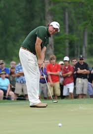

You chose to be conservative with the putt to give yourself the best chance at par. You easily get the ball in the hole in two putts, and score a par on the hole. Nice work!
 Image from: http://theaposition.com/davidhbarrett/golf/personalities/1025/how-do-the-pga-tour-s-best-players-rate-as-putters